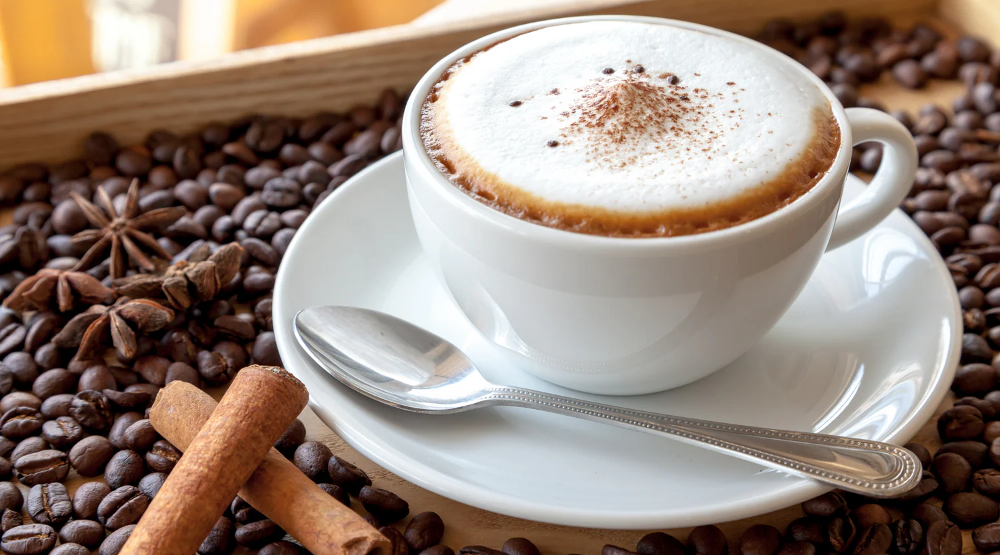
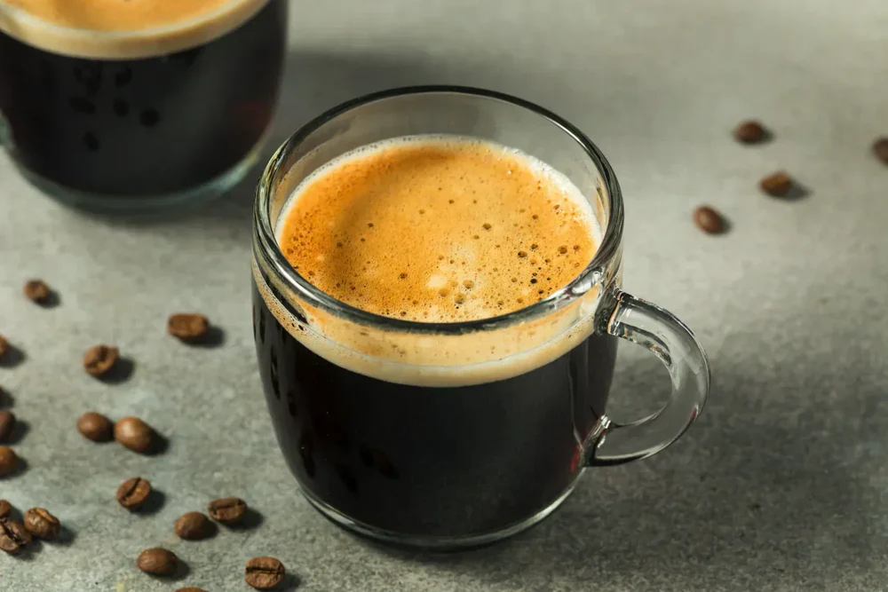

Kahve dünyasında birçok farklı kahve türü bulunmaktadır. Bu türler, kahvenin hazırlanış şekline, kullanılan süt miktarına ve kahvenin yoğunluğuna göre değişiklik göstermektedir. En çok bilinen kahve türleri arasında espresso, latte, cappuccino ve americano yer alır. Her kahvenin tadı ve içim hissi birbirinden farklıdır.

Espresso, küçük fincanlarda servis edilen yoğun ve aroması güçlü bir kahve türüdür. Kahve çekirdeklerinin ince öğütülmesi ve yüksek basınç altında sıcak su ile demlenmesiyle hazırlanır. Espresso birçok kahve çeşidinin temelini oluşturur. Latte, cappuccino ve mocha gibi kahveler espresso kullanılarak yapılır. Tadı diğer kahvelere göre daha serttir ve yoğun bir kahve deneyimi sunar. Bu nedenle kahve severler tarafından oldukça popülerdir.

Latte, espresso üzerine bol miktarda sıcak süt eklenerek hazırlanan yumuşak içimli bir kahve türüdür. Üst kısmında genellikle ince bir süt köpüğü bulunur. Diğer kahvelere göre daha hafif bir tada sahip olduğu için özellikle kahveye yeni başlayan kişiler tarafından sıkça tercih edilir. Latte aynı zamanda üzerine yapılan süt köpüğü desenleri ile de dikkat çeker. Kafelerde baristalar latte art adı verilen desenler yaparak kahveyi görsel olarak da daha çekici hale getirirler.

Cappuccino, espresso, sıcak süt ve süt köpüğünün dengeli bir şekilde birleşmesi ile hazırlanan popüler bir kahve türüdür. Genellikle üç eşit katmandan oluşur: espresso, süt ve süt köpüğü. Bu dengeli yapı sayesinde hem yoğun kahve tadı hem de yumuşak bir içim sunar. Cappuccino özellikle Avrupa ülkelerinde oldukça yaygın olarak tüketilmektedir ve kahve kültürünün önemli bir parçası haline gelmiştir.

Americano, espresso üzerine sıcak su eklenerek hazırlanan bir kahve türüdür. Bu yöntem sayesinde espressoya göre daha hafif ve daha uzun süre içilebilen bir kahve elde edilir. Americano özellikle sade kahve seven kişiler tarafından tercih edilir. Yoğun kahve aromasını korurken daha yumuşak bir içim sunması nedeniyle günlük kahve tüketiminde oldukça popüler bir seçenektir.